Backline para el ensayadero
Así se ve la app para el dueño de un ensayadero y para las bandas que le reservan. Son capturas de la interfaz funcionando con datos de ejemplo («Sala Resonancia», «Kabaret»). Cada pantalla es desplazable: arrastra dentro del teléfono para ver el resto.
Dos sombreros. El dueño también toca en una banda. Desde la barra de arriba cambia entre «Mis bandas» y «Mi negocio»: en cada uno la navegación de abajo es distinta, y un aviso rojo le recuerda si tiene solicitudes por responder mientras está en su banda.
1 · Cambiar de sombrero
Una sola cuenta, dos mundos. El negocio puede ser un ensayadero hoy y, más adelante, un estudio, un luthier o una tienda.
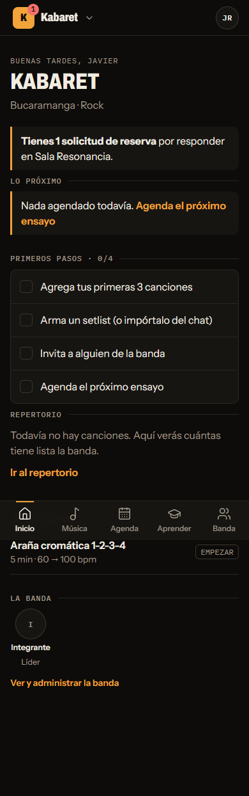
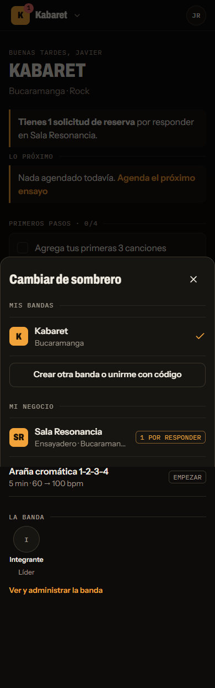
2 · Mi negocio: el día a día
Navegación propia: Hoy · Reservas · Salas · Ensayadero · Mis bandas. Lo primero que ve es qué tiene que responder y qué pasa hoy.
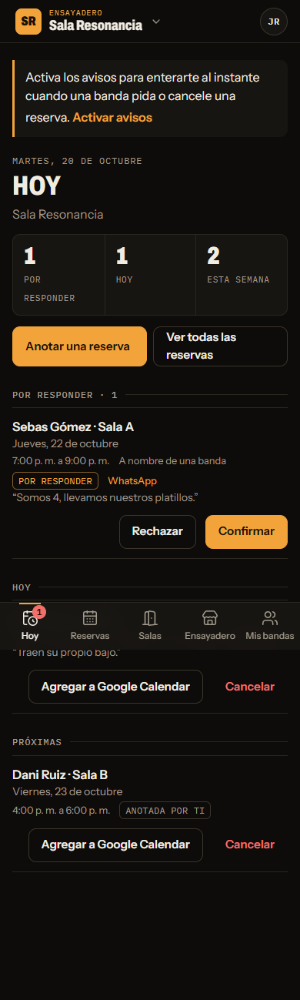
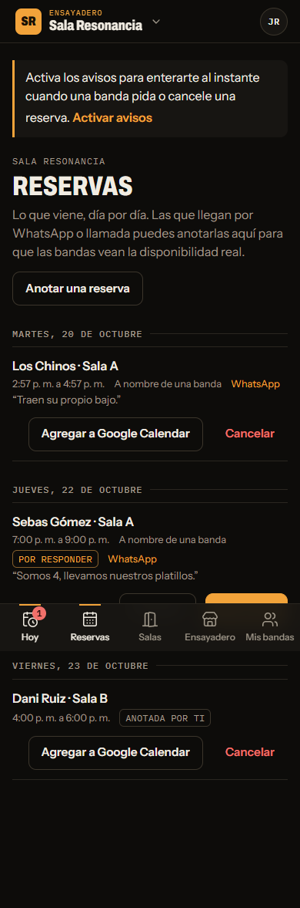
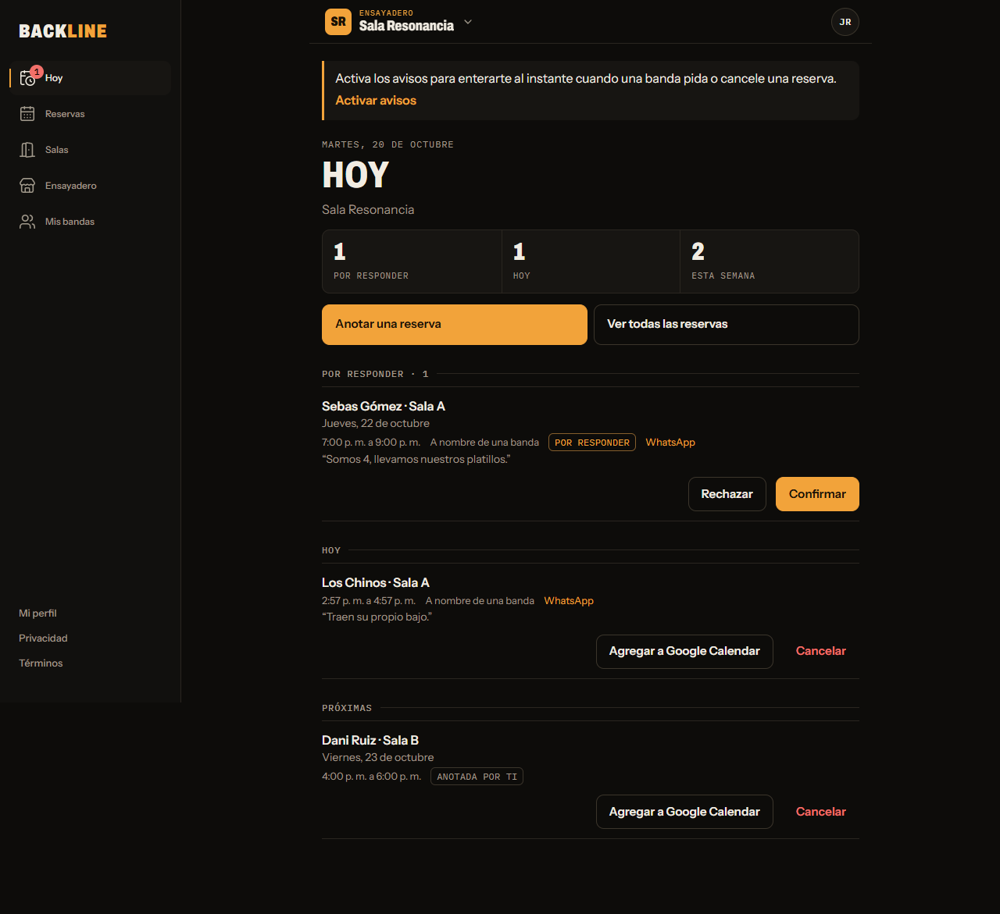
En el computador la navegación pasa a la barra lateral.
3 · Salas, equipo y horario
Cada ensayadero tiene salas (un estudio tendría salas de grabación). Cada sala tiene su tamaño, su equipo y su precio.
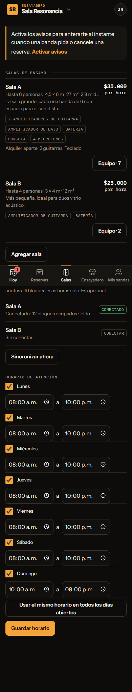
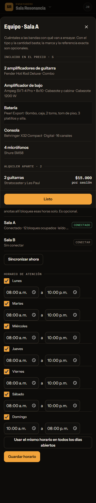
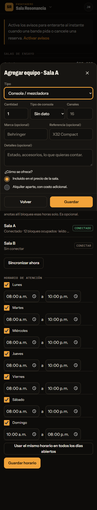
4 · Perfil, mapa y publicación
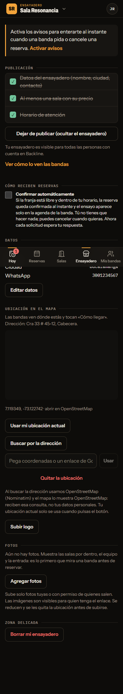
5 · Lo que ven las bandas
La ficha pública del ensayadero: dónde está, qué incluye cada sala, qué se alquila aparte y cuánto cuesta, y el horario. Desde ahí reservan.
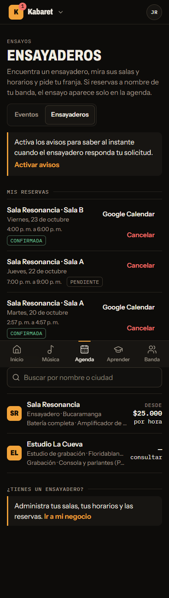
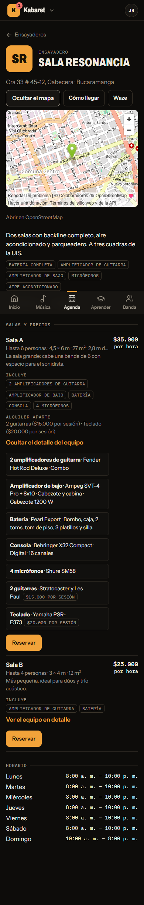
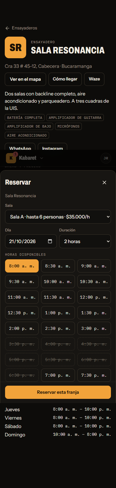
Lo que sigue (a decidir contigo)
Mapa con todos los ensayaderos y «cerca de mí» · filtros por equipo («tiene bajo y 2 amplificadores») · fotos y plano de cada sala · estudios de grabación, luthiers y tiendas como otros tipos de negocio · marketplace de instrumentos para cualquier usuario (con revisión legal antes de abrirlo).